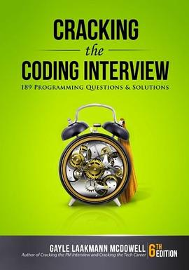

2019年1月
广播发布后不可编辑，所以每条都是那一刻的原话。
2019-01-28 16:23:54

如果面试挂了，就开始读这本
2019-01-28 16:22:48
在读 剑指Offer ★★★★★
看完了，希望Google面试运气好！ //第一本工作读物，上班摸鱼消磨时间必备：）
2019-01-26 12:19:44
 想看 怒晴湘西
想看 怒晴湘西
哟？大二时候看的，现在终于除了续集了？
2019-01-25 08:28:53
在读 剑指Offer ★★★★★
第一本工作读物，上班摸鱼消磨时间必备：）
2019-01-24 13:02:18
以后刷题估计就用python了吧
2019-01-13 21:03:02
 想玩 蔚蓝 Celeste
想玩 蔚蓝 Celeste
2019-01-12 19:11:15
果断关注
2019-01-12 19:10:58
 看过 与神同行2：因与缘 / 신과함께-인과 연 ★★★★★
看过 与神同行2：因与缘 / 신과함께-인과 연 ★★★★★
比第一部更精彩，故事都是连着的，这几个阴间使者的来头也都说了，大快朵颐！下一部肯定更精彩，没想到啊没想到，风水轮流转，父亲审儿子，被害人审施害人，这就是命吧
2019-01-12 13:30:24
在看 空中浩劫 第二季 / Mayday Season 2 ★★★★★
2019-01-12 13:30:09
 看过 空中浩劫 第一季 / Mayday Season 1 ★★★★★
看过 空中浩劫 第一季 / Mayday Season 1 ★★★★★
好看，以史为鉴
2019-01-12 07:21:19
 想看 副总统 / Vice
想看 副总统 / Vice
2019-01-12 07:20:41

2019-01-10 22:45:16
在玩 极限竞速：地平线4 Forza: Horizon 4 ★★★★★
赛车游戏能做的这么好玩，我真的是落伍了。。之前本科的时候还在玩极品飞车9，觉得已经很好玩了，现在有了Xbox画面真是太美了，游戏性玩法也十分佛系，手残党福音
2019-01-10 22:42:39
在看 空中浩劫 第一季 / Mayday Season 1 ★★★★★
不得不说我变懒了，懒得找资源了，直接从看tv上面看了就。。
2019-01-09 19:05:11
 看过 无敌破坏王 / Wreck-It Ralph ★★★★★
看过 无敌破坏王 / Wreck-It Ralph ★★★★★
人设真是太棒了！游戏也是真实游戏改编的好多彩蛋啊，看完第二部之后来补的，Vanellope太可爱了！！！
2019-01-08 07:06:53
2019-01-07 13:50:02
2019-01-04 11:44:08
想看 小偷家族 / 万引き家族
感谢网易云
2019-01-01 08:51:26
想看 紫罗兰永恒花园 剧场版 / 劇場版 ヴァイオレット・エヴァーガーデン
必看
2019-01-01 08:31:29
Vanellope太可爱了，要补要补
2019-01-01 08:22:13
看过 大江大河 ★★★★☆
有幸看了7集，对于有代沟的我这一代，还是不错的剧